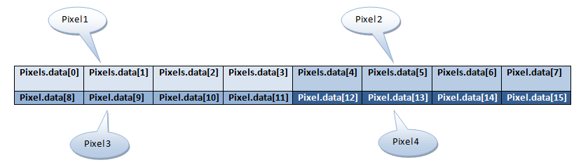
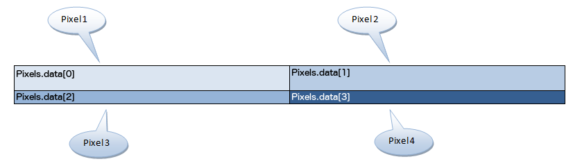
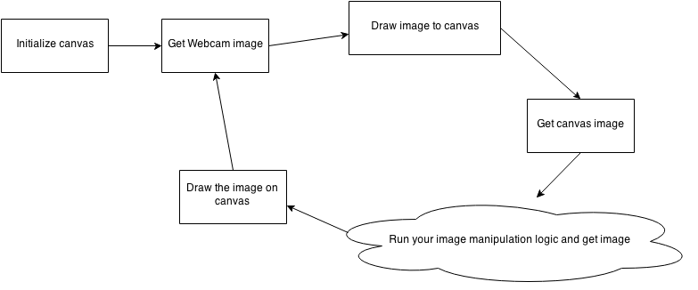

Workshop 1
We are going to manipulate live webcam footage by either
- changing the colours
- drawing shapes
- etc.
What you will need to know
- Basic programming (language doesn't matter)
-
arrays, lists, etc.
- How to access elements, e.g.
someArray[index]
- How to access elements, e.g.
-
How to traverse an entire array
- Hint:
for-loops
- Hint:
How we will work with the web cam: a high-level view
- For every fraction of a second, our program will be capturing an image from the webcam, which we will have raw access to
- The raw image data will have an array of numbers, which their arrangements represents pixels
First, about pixels
- Pixels are what comprise digital images
- They're essentially dots; when viewed from a distance gives the illusion of images
What pixels are in the 21st century computer
-
They are essentially colours
- They have three components that represent red, green, and blue, and occasionally a fourth, which is called alpha
-
They are a triple of numbers (and sometimes 4-tuples), where each number varies from 0 to
255, e.g.
-
(255, 0, 0)which represents red -
(64, 224, 208)which represents turquoise -
(255, 255, 255)which represents white
-
Dealing with images and its pixels computationally
Images are arrays of pixels. And so, to access a pixel, you access elements in an array just like any other array.
pixels[i];
We have two types of arrays that represent pixels in an image
- where each element represents a channel of a pixel
- where each element represents an entire pixel
1. each element represents a channel of a pixel
Take a look at this zoomed-in 2 by 2, 4 pixel image:

Here's a schema on how to access the channels of the pixels

1. each element represents a channel of a pixel (cont'd)
In this case, we will have to iterate every four elements, to get an entire pixel
for (var i = 0; i < pixels; i += 4) {
var red = pixels[i];
var green = pixels[i + 1];
var blue = pixels[i + 2];
var alpha = pixels[i + 3];
}
Remember: each element is a numbers that has a value between 0 to 255
1. each element represents a channel of a pixel (cont'd)
Let's see how we would go about dimming an entire image
for (var i = 0; i < pixels; i += 4) {
pixels[i] = pixels[i] / 2;
pixels[i + 1] = pixels[i + 1] / 2;
pixels[i + 2] = pixels[i + 2] / 2;
}
2. each element represents an entire pixel
Take a look at this zoomed-in 2 by 2, 4 pixel image:

Here's a schema on how to access the pixels of our image

2. each element represents an entire pixel (cont'd)
Because an element in the pixels array represents a single pixel, we can iterate over every element, and we should have acces to an entire pixel, per iteration
for (var i = 0; i < pixels; i++) {
var pixel = pixels[i];
}
2. each element represents an entire pixel (cont'd)
You may ask how to extract the red, green, and blue (and alpha) components of the pixel? We will see that a bit later...
Extracting the red, green, and blue components of a pixel data
Remember, there are two types of pixel arrays to represent pixels in an image:
- each element only represents a particular channel of a particular pixel
- each element actually reperesnts an entire pixel
The former already grants us direct access to each channel, while the latter only gives us an object where we are required to extract the channels ourselves
What is this object?
- Remember how in the first array type, every element is a number that varies from 0 to 255?
- Elements in the second array type are numbers as well; except, much larger. How large? It varies from 0 to approximately 4 billion!
- But we are not interested in that number itself; we are interested at the bit-level representation
How numbers are represented in computers
Unlike in our day-to-day numerical representation, which is in decimal, computers deal with binary representation of numbers
| Decimal | Binary | Decimal | Binary |
| 0 | 0 | 11 | 1011 | 1 | 1 | 12 | 1100 |
| 2 | 10 | 13 | 1101 |
| 3 | 11 | 14 | 1110 |
| 4 | 100 | 15 | 1111 |
| 5 | 101 | 16 | 10000 |
| 6 | 110 | 17 | 10001 |
| 7 | 111 | 18 | 10010 |
| 8 | 1000 | 19 | 10011 |
| 9 | 1001 | 20 | 10100 |
| 10 | 1010 | 21 | 10101 |
So back to our methods for reading pixels
- Our first representation: each element is a channel, where their values vary from 0 to 255
- Our second representation: each element is an entire pixel, and its value varies from 0 to 4 billion
Why ?
- The first representation: each element (number) has a binary digits (bit) length of 8 bits, hence why they vary from 0 to 255
- The second representation: each element (also a number) has a bit length of 32 bits, hence why they vary from 0 to 4 billion
The Gist of it
- Each element of the second representation has 32 bits of data
- 32 is a multiple of 8
- this means we can split an element into four segments of 8 bits
- this means that each channel is stored in their own 8-bit segment in a 32-bit pixel value
Let's the take the colour (64, 224, 208), turquoise
In the 32-bit representation of a pixel, turquoise will have the following binary value:
11111111110100001110000001000000
Note: reading from left-to-right, the channels are stored in the reverse order, and so the first 8 bits represents the alpha channel, the next 8 is blue, the one after is green, and finally, red
Let's examine further
Turquoise: 11111111110100001110000001000000
| red | green | blue | alpha | |
| Decimal | 64 | 224 | 208 | 255 |
| Binary | 01000000 | 11100000 | 11010000 | 11111111 |
| Hexadecimal | 40 | E0 | D0 | FF |
Bitwise operation primer
When computing numbers, we have more than just the arithmetic
operators (such as +, -, *
/, %)
- We have, what are called, bitwise operators
- They manipulate bits, instead of performing arithmetics
Bitwise operation primer: bitwise AND (a & b)
The bitwise AND returns the resulting bits of all logical AND operations performed on all bits
E.g. 16521 & 40 yields:
00000000000000000100000010001001
& 00000000000000000000000000101000
----------------------------------
00000000000000000000000000001000
Bitwise operation primer: bitwise AND (a & b) (cont'd)
The bitwise AND allows us to more easily extract bits from a binary number
In the case of image processing, it allows us to more easily extract the component of the pixel
Bitwise operation primer: bitwise AND (a & b) (cont'd)
To extract the red channel from turquoise, we would take the big pixel value, and perform the bitwise AND with the value 255, which only has the least eight significant bits set to 1
11111111110100001110000001000000
& 00000000000000000000000011111111
----------------------------------
00000000000000000000000001000000
And 00000000000000000000000001000000 represents the number 64 in decimal
Bitwise operation primer: bitwise shift right (a >> b)
The bitwish shift right shifts the bits of the left operand by the value indicated by the right operand
The most significant bits are replaced by 0s
E.g. 252 >> 2:
00000000000000000000000011111100
>> 2
-----------------------------------
00000000000000000000000000111111
Bitwise operation primer: bitwise shift right (a >> b) (cont'd)
While the bitwise AND is useful for extracting the values of particular bits, the bitwise shift left will allow us to extract the actual numerical representation of those bits
Bitwise operation primer: bitwise shift right (a >> b) (cont'd)
Let's get the green value from turquoise. But first, let's ensure that the green byte, which is the third byte, is now the fourth byte. To do this, we will bitwise shift 8 bits to the right
11111111110100001110000001000000
>> 8
-----------------------------------
00000000111111111101000011100000
Bitwise operation primer: bitwise shift right (a >> b) (cont'd)
Now, let's extract the value of the last 8 bits, with a bitwise AND
00000000111111111101000011100000
& 00000000000000000000000011111111
----------------------------------
00000000000000000000000011100000
And the value 00000000000000000000000011100000 is binary representation of the number 224 in decimal
Bitwise operation primer: applying the bitwise AND, along with the bitwise shift right
Now, let's see how this would look like in JavaScript. Let's assume we have access to a variable called pixel, to get its components we write the following:
var red = pixel & 255;
var green = (pixel >> 8) & 255;
var blue = (pixel >> 16) & 255;
var alpha = (pixel >> 24) & 255;
Bitwise operation primer: Bitwise shift left (a << b)
This is the opposite of the bitwise shift right; it shifts the bits left
As the bits are shifted left, the least significant bits are replaced by 0s
63 << 2
00000000000000000000000000111111
<< 2
-----------------------------------
00000000000000000000000011111100
Bitwise operation primer: Bitwise shift left (a << b) (cont'd)
In the case of image processing, bitwise shift left is great for constructing pixel data from a smaller channel value
Bitwise operation primer: Bitwise shift left (a << b) (cont'd)
Let's construct a black opaque pixel
00000000000000000000000011111111
<< 24
-----------------------------------
11111111000000000000000000000000
Bitwise operation primer: Bitwise OR (a | b)
The bitwise OR returns the logical OR operation performed on all bits
E.g. 16 | 4
00000000000000000000000000010000
| 00000000000000000000000000001000
----------------------------------
00000000000000000000000000011000
Bitwise operation primer: Bitwise OR (a | b) (cont'd)
In the case of image processing, the bitwise OR is great for appending values together, and then derive a pixel
Bitwise operation primer: Bitwise OR (a | b) (cont'd)
Let's generate the colour red (255, 0, 0). We will start out by creating the opaque colour black
00000000000000000000000011111111
<< 24
-----------------------------------
11111111000000000000000000000000
Bitwise operation primer: Bitwise OR (a | b) (cont'd)
Then, we will bitwise OR together the colours black and the component red (we can also call it a "transparent" red)
11111111000000000000000000000000
| 00000000000000000000000011111111
----------------------------------
11111111000000000000000011111111
Bitwise operation primer: Applying the bitwise shift left and the bitwise or
Now let's see how we would go about creating the colour turquoise (64, 224, 208) from scratch, in JavaScript
var red = 64;
var green = 224;
var blue = 208;
var alpha = 255;
var pixel = red | (green << 8) | (blue << 16) | (alpha << 24);
Manipulating pixels with our second method
Now let's see what it would be like dim an image using the second method of reading and manipulating pixels
for (var i = 0; i < pixels; i++) {
var pixel = pixels[i];
var red = pixel & 255;
var green = (pixel >> 8) & 255;
var blue = (pixel >> 16) & 255;
var alpha = (pixel >> 24) & 255;
red = red / 2;
green = green / 2;
blue = blue / 2;
pixel[i] = red | (green << 8) | (blue << 16) | (alpha << 24);
}
Drawing Frame-by-Frame
Working with the code
We rely on several libraries:
- dat.gui: a GUI library for changing settings live
- media.js: a helper library for getting webcam data
- app-utils.js: a set of helper libraries that Matt wrote just for this class
Fortunately, they're all imported for us in a boilerplate code that Matt wrote
Working with the code (cont'd)
First, and foremost, we need to create an entry point
//setup app
APP.setup({w:640, h:480});
//add effects
APP.effects = [];
//setup controls
APP.setupControls();
Working with the code (cont'd)
Now, above our entry point let's create a basic effect
We will create a class for our effect. It will have only one method: draw
function BasicEffect() {
this.canvas = new MEDIA.Canvas();
this.name = 'BasicEffect';
this.controls = {};
}
BasicEffect.prototype = {
// This is our draw method
draw: function () {
var canvas = this.canvas;
APP.drawImage(canvas);
}
};
Working with the code (cont'd)
Let's not forget to add our effect to the effects list
Let's go back to our entry point
//setup app
APP.setup({w:640, h:480});
//add effects
APP.effects = [];
// Our draw effect added to the effects list
APP.effects.push(new BasicEffect());
//setup controls
APP.setupControls();
Working with the code (cont'd)
Now, let's actually read the pixels
Working with the code (cont'd)
Using the "each element is a channel" array
draw: function() {
var canvas = this.canvas;
// Get a snapshot of what the webcam is "seeing" right now, and draw it to
// our canvas.
APP.drawImage(canvas);
// Get the raw image data that was drawn onto the canvas
var img = canvas.getImageData();
// Convert the canvas data into a byte (8-bit) array
var pixels = img.data;
// We are not going to do anything with our pixels. Just read them and write
// them back for the sake of demonstration
for (var i = 0; i < data.length; i += 4) {
pixels[i] = pixels[i];
pixels[i + 1] = pixels[i + 1];
pixels[i + 2] = pixels[i + 2];
pixels[i + 3] = pixels[i + 3];
}
canvas.putImageData(img);
}
Working with the code (cont'd)
Using the "each element is a pixel" array
draw: function() {
var canvas = this.canvas;
// Get a snapshot of what the webcam is "seeing" right now, and draw it to
// our canvas.
APP.drawImage(canvas);
// Get the raw image data that was drawn onto the canvas
var img = canvas.getImageData();
// Convert the canvas data into a 4-byte (32-bit) unsigned integer array
var pixels = new Uint32Array(img.data.buffer);
// We are not going to do anything with our pixels. Just read them and write
// them back for the sake of demonstration
for (var i = 0; i < data.length; i += 4) {
var pixel = pixels[i];
var red = pixel & 255;
var green = (pixel >> 8) & 255;
var blue = (pixel >> 16) & 255;
var alpha = (pixel >> 24) & 255;
pixels[i] =
red & 255 |
((green & 255) << 8) |
((blue & 255) << 16) |
((alpha & 255) << 24);
}
canvas.putImageData(img);
}